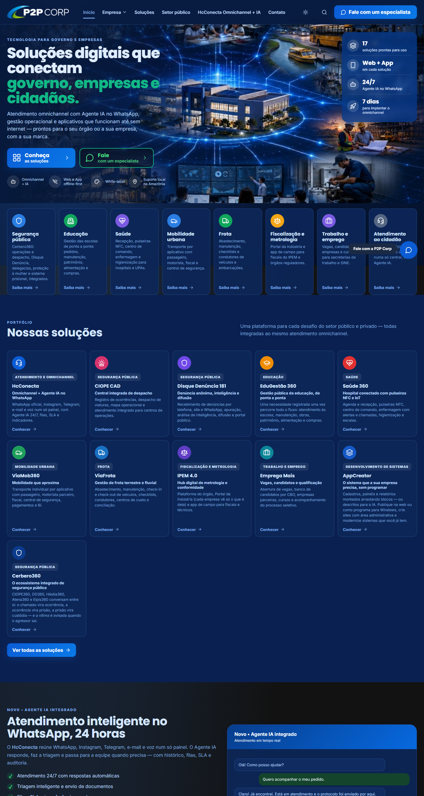
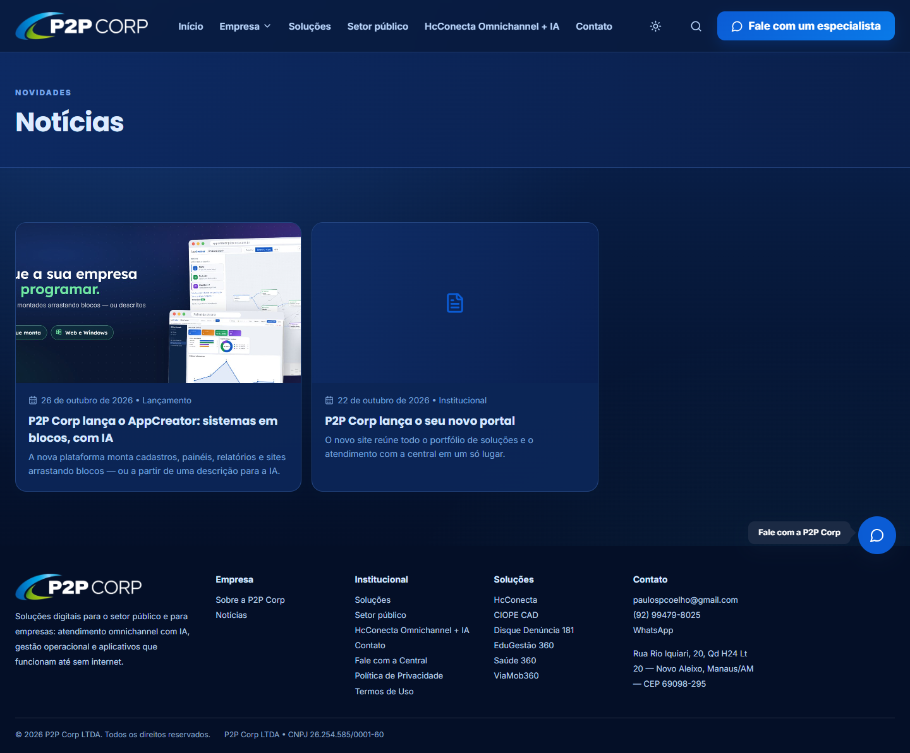
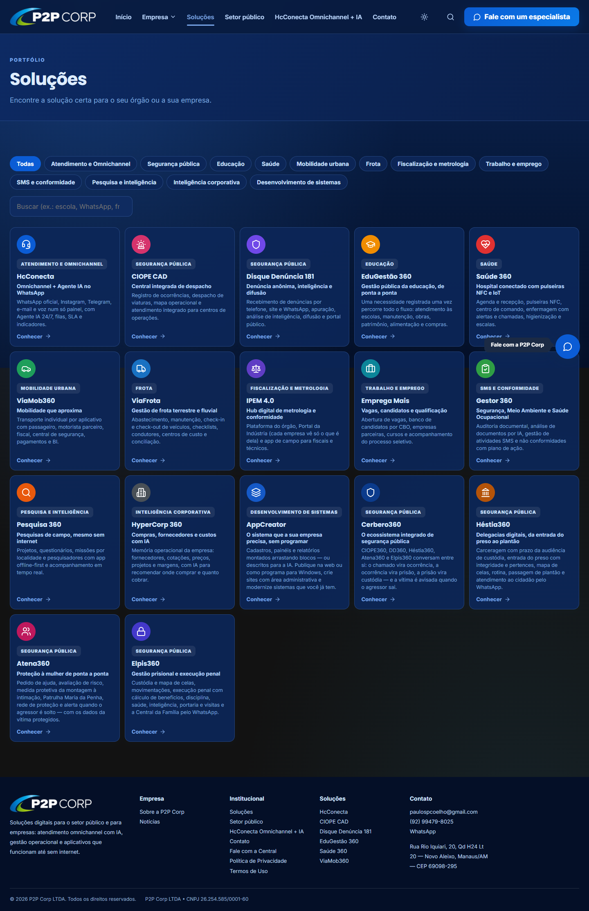
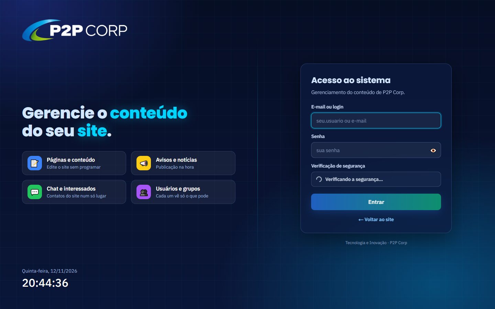

Manual do site
Site P2P Corp
As páginas do site P2P Corp e a área administrativa — o que cada uma mostra e para que serve.
| Produto | P2P Corp |
| Público | Equipe que publica e administra o site |
| Versão | Novembro de 2026 |
 P2P Corp — Tecnologia e Inovação
P2P Corp — Tecnologia e Inovação
| Produto | P2P Corp |
| Público | Equipe que publica e administra o site |
| Versão | Novembro de 2026 |
P2P Corp — Tecnologia e Inovação
Endereço: . Atendimento omnichannel com Agente IA no WhatsApp, gestão operacional e aplicativos que funcionam até sem internet — prontos para o seu órgão ou a sua empresa, com a sua marca.

Endereço: . A nova plataforma monta cadastros, painéis, relatórios e sites arrastando blocos — ou a partir de uma descrição para a IA.

Endereço: . Encontre a solução certa para o seu órgão ou a sua empresa.

Endereço: . Entrada da equipe com usuário e senha (os mesmos usuários do banco do site, com verificação de segurança automática): ali se editam páginas, avisos, perguntas frequentes, configurações e se respondem os contatos. O site também pode ser gerenciado pelo AdmSite360.

P2P Corp — Site P2P Corp · P2P Corp — Tecnologia e Inovação. As telas usam dados fictícios de demonstração.